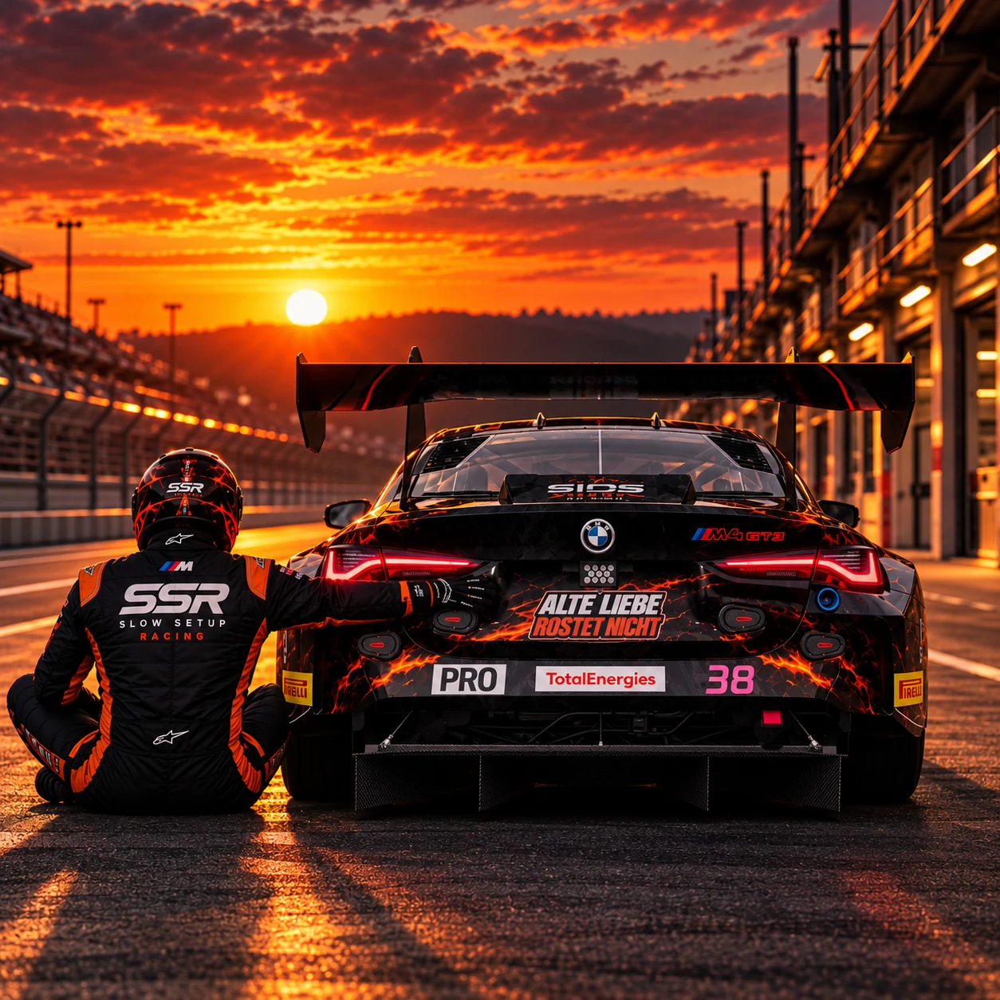

Sids Design Garage / Custom GT3 Livery Design
ACC LIVERY ERSTELLEN LASSEN.
Dein Rennwagen. Dein Charakter. Dein Design. Sids Design Garage gestaltet individuelle GT3-Liveries für Assetto Corsa Competizione – für Simracer, Teams und alle, die auf der Strecke auffallen möchten.
DEINE LIVERY ANFRAGEN ↗
Deine Idee wird zum Design
GT3 LIVERY DESIGN MIT CHARAKTER.
Ob markante Farben, ein unverwechselbares Teamdesign oder eine aggressive Motorsport-Optik: Jede Livery entsteht passend zu deinem Fahrzeug und deiner Idee. Keine austauschbare Standardlackierung, sondern ein eigenständiger Auftritt.
Individuelle Gestaltung
Farbkonzept, Formen, Startnummern und Sponsoren werden zu einem stimmigen Gesamtdesign kombiniert.
Für Fahrer & Teams
Vom einzelnen GT3-Fahrzeug bis zum einheitlichen Auftritt eines Simracing-Teams.
ACC Liveries
Designs für Fahrzeuge in Assetto Corsa Competizione mit dem Anspruch, auch auf der Rennstrecke Wiedererkennungswert zu schaffen.
Echte Arbeiten / Portfolio
DESIGNS, DIE AUFFALLEN.
Sieh dir ausgewählte Originalprojekte an – von einem düsteren Ford Mustang GT3 bis zu individuellen Team-Liveries.
WEITERE LIVERIES ENTDECKEN ↗ · KUNDENPROJEKT ROCK MOTORSPORT ↗
So geht es weiter
DEINE IDEE. UNSER NÄCHSTES PROJEKT.
Beschreibe dein Fahrzeug, deine Wunschfarben, Sponsoren und den Stil, den du dir vorstellst. Über das Kontaktformular kannst du auch ein Logo oder eine Vorlage mitsenden. Anschließend besprechen wir die Umsetzung gemeinsam.
JETZT PROJEKT ANFRAGEN ↗HÄUFIGE FRAGEN.
Kann ich eine individuelle ACC Livery erstellen lassen?
Ja. Du kannst Sids Design Garage eine Anfrage mit deinem Fahrzeug, deinen Farben und deinen Vorstellungen senden. Gemeinsam klären wir, was sich umsetzen lässt.
Kann ich eigene Sponsoren und Startnummern verwenden?
Ja, teile die gewünschten Startnummern und vorhandenen Logos bei deiner Anfrage mit. Die Verwendung fremder Marken oder Logos muss entsprechend erlaubt sein.
Gestaltest du auch Liveries für Simracing-Teams?
Ja. Im Portfolio findest du bereits verschiedene Kunden- und Teamprojekte mit individuellen GT3-Designs.